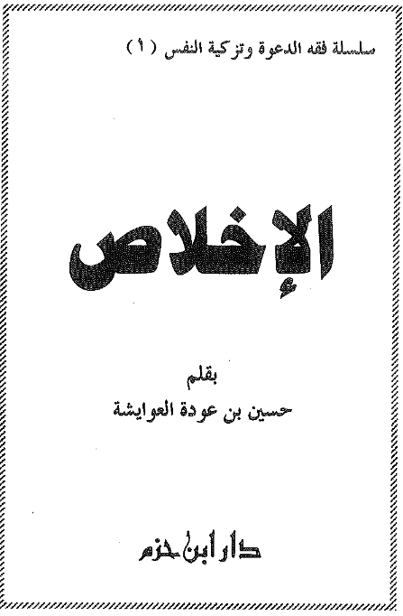
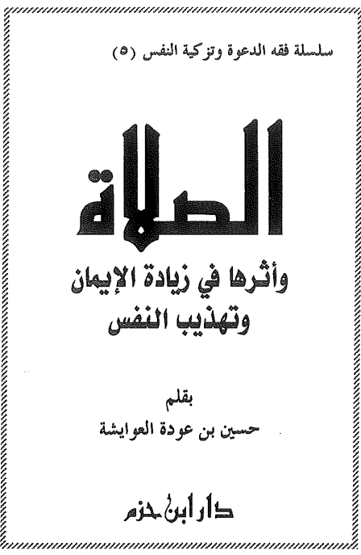
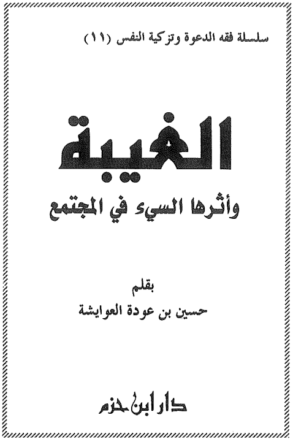

كتب الشيخ حسين العوايشة

الاخلاص
جَاءَ هٰذَا الكِتَابُ لِبَيَانِ أَهَمِّيَّةِ الإِخْلَاصِ فِي العِبَادَاتِ وَالأَعْمَالِ، وَذِكْرِ فَضَائِلِهِ وَصُوَرِهِ، وَتَبْيِينِ خَطَرِ الرِّيَاءِ عَلَى الأَعْمَالِ، مَعَ بَيَانِ أَسْبَابِهِ وَطُرُقِ مُعَالَجَتِهِ، وَذٰلِكَ مِمَّا يَعُودُ بِالنَّفْعِ عَلَى المُسْلِمِ فِي تَصْحِيحِ أَعْمَالِهِ وَسَلَامَةِ دِينِهِ، وَتَحْقِيقِ النَّجَاةِ عِنْدَ اللهِ عَزَّ وَجَلَّ
تحميل الكتاب
البكاء من خشية الله
كِتَابٌ يَتَضَمَّنُ فَضْلَ البُكَاءِ مِنْ خَشْيَةِ اللهِ، وَيُوَضِّحُ السَّبِيلَ إِلَى ذٰلِكَ، مُعَالِجًا العَوَائِقَ قَدْرَ المُسْتَطَاعِ، ذَاكِرًا بَعْضَ النُّصُوصِ وَالآثَارِ فِي بُكَاءِ النَّبِيِّ ﷺ وَأَصْحَابِهِ رَضِيَ اللهُ عَنْهُمْ
تحميل الكتاب
التحذير من الشيطان
يَتضَمّن هٰذَا الكِتَابَ التَّحْذِيرَ مِنْ خَطَرِ الشَّيْطَانِ، وَبَيَانَ عِظَمِ أَثَرِهِ، وَإِيضَاحَ مَكَايِدِهِ لِبَنِي آدَمَ، وَمَا يَجْلِبُهُ إِغْوَاؤُهُ مِنَ المَفَاسِدِ، كَمَا يَتَنَاوَلُ الأُمُورَ الَّتِي تُبْعِدُ الشَّيْطَانَ وَتُنَفِّرُهُ، وَيَتَضَمَّنُ فَصْلًا فِي صِيَغِ الِاسْتِعَاذَةِ، وَمَا فِي سُورَةِ الفَلَقِ مِنْ كُنُوزٍ وَمَعَانٍ عَظِيمَةٍ، إِلَى غَيْرِ ذٰلِكَ مِنَ الأَسْبَابِ الَّتِي تَكُونُ حِصْنًا لِلْعَبْدِ مِنَ الشَّيْطَانِ بِإِذْنِ اللهِ تَعَالى
تحميل الكتاب




المظهرية الجوفاء
يَتَضَمَّنُ الكِتَابُ ذَم المُظَاهَرِيَّةِ المُعَاصِرَةِ، وَكَثِيرًا مِنْ أَسَالِيبِهَا فِي العَصْرِ الحَدِيثِ، كَالمُظَاهَرِيَّةِ فِي الأَفْرَاحِ، وَالمَآتِمِ، وَالزِّيَارَاتِ، وَيَتَنَاوَلُ حَالَ مَسَاجِدِ اليَوْمِ، مُقَارِنًا إِيَّاهَا بمَسْجِدِ النَّبِيِّ ﷺ، وَكَيْفَ كَانَ حَالُ سَلَفِ هٰذِهِ الأُمَّةِ فِي لزوم الكتاب و السُّنَّة
تحميل الكتابفيض الرحمن في مفكرة رمضان
يَتَضَمَّنُ هٰذَا الكِتَابُ وَظَائِفَ شَهْرِ رَمَضَانَ المُبَارَكِ وَأَعْمَالَهُ، وَقَدْ جَعَلَ الشَّيْخُ لِكُلِّ يَوْمٍ مِنْ أَيَّامِ رَمَضَانَ صَفْحَتَيْنِ، تَضُمَّانِ التَّذْكِيرَ بِفَضْلِهِ، وَأَحْكَامِهِ، وَآدَابِهِ، وَفَضْلِ تِلَاوَةِ القُرْآنِ العَظِيمِ، وَالصَّدَقَاتِ، وَمَا يَلْزَمُ العِيدَ مِنَ البِرِّ وَالصِّلَةِ وَغَيْرِهَا مِنَ الحُقُوقِ.
تحميل الكتاب


مصيبة موت النبي صلى الله عليه وسلم
كِتَابٌ يَتَكَلَّمُ عَنْ عِظَمِ مُصِيبَةِ مَوْتِ النَّبِيِّ ﷺ، وَأَثَرِ هٰذِهِ المُصِيبَةِ عَلَى المُجْتَمَعِ وَالفَرْدِ
تحميل الكتاب

فتح العليم في شرح أدعية وأذكار الصلاة من التكبير إلى السجود
كتاب يتناول شرحًا مبسطًا عن فتح العليم في شرح أدعية وأذكار الصلاة من التكبير إلى السجود.
تحميل الكتاب
🟡 منصات خدمة علم الشيخ د.حسين العوايشة